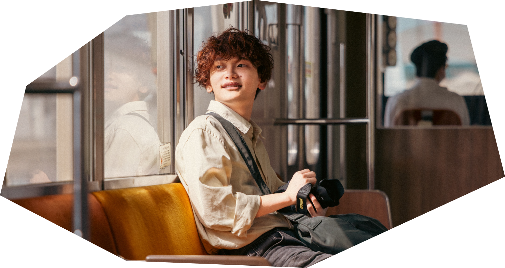

Who is
Milk?

慶應義塾大学に通ってます、メンターのみるく（大沼朝陽）です！
スクールでは、池袋スクールでWebサービスコースを、白金スクールでUnityコースを担当してます！毎週木曜日には、「PBLの学校」でMCをしています！
趣味は写真撮影で、静かな公園などでポートレートを撮影するのが好きです！
model : massu-
model : shimato-
model : harchie
model : honamin
model : kippei
model : manji